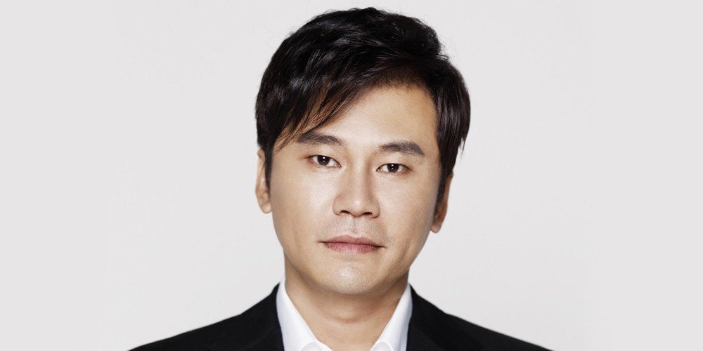

លោក Yang Hyun Suk បានប្រកាសលាលែងជាផ្លូវការពីតំណែងប្រធានផ្នែកផលិត និង តំណែងផ្សេងៗទៀតក្នុងផលិតកម្មយក្សកូរ៉េខាងត្បូង YG Entertainment។ នៅថ្ងៃទី ១៤ ខែមិថុនានេះ លោក Yang បានបង្ហោះសារទៅលើវិបសាយ YGE មានអត្ថន័យដូចខាងក្រោម ៖
នេះគឺ Yang Hyun Suk។ ខ្ញុំសូមធ្វើការសុំទោសដល់អ្នកគាំទ្រដែលស្រឡាញ់ YG និងតារាចម្រៀងរបស់យើង។ ខ្ញុំពិតជាសុំទោសដោយស្មោះទៅដល់បុគ្គលិកទាំងអស់ ដែលបានបន្តធ្វើការងាររបស់ខ្លួនយ៉ាងស្ងៀមស្ងាត់ ទោះបីមានព្យុះរិះគន់ខ្លាំង។
ខ្ញុំបានរក្សាភាពស្ងៀមស្ងាត់ ចំពោះពាក្យដែលគេនិយាយអំពីស្ថានភាពបច្ចុប្បន្ននេះ ដោយត្រូវបានយល់ថាជាការពិត។ យ៉ាងណាក្ដី ខ្ញុំយល់ថា ពេលនេះពិបាកណាស់។ ខ្ញុំយល់ថា YG តារារបស់ YG និងអ្នកគាំទ្រ នឹងលែងជួបបញ្ហាដោយសារតែខ្ញុំទៀតហើយ។
រយៈពេល ២៣ ឆ្នាំ ខ្ញុំបានចំណាយពេលពាក់កណ្ដាលជីវិត និងគ្រប់យ៉ាងដើម្បីឲ្យ YG លូតលាស់។ ការខិតខំជ្រោមជ្រែងចម្រៀងល្អ និងតារាល្អ គឺជាភាពរីករាយមួយសម្រាប់ខ្ញុំ។ ខ្ញុំគិតថាវាជាសមត្ថភាពតែមួយគត់ ដែលខ្ញុំអាចផ្ដល់ឲ្យអ្នកគាំទ្រ និងសង្គម។
យ៉ាងណាក្ដី ខ្ញុំនឹងលាលែងពីតំណែង និងការងារទាំងអស់នៅ YG ចាប់ពីថ្ងៃនេះ។ ខ្ញុំសង្ឃឹមថានឹងមិនមានរឿងមិនល្អកើតមានចំពោះតារា YG ទាំងឡាយដែលខ្ញុំស្រឡាញ់ និងដល់អ្នកគាំទ្រដែលស្រឡាញ់ពួកគេ ដោយសារតែខ្ញុំទៀតនោះទេ។
បច្ចុប្បន្ននេះមានអ្នកខ្លាំងជាច្រើននៅ YG ដែលមានសមត្ថភាពជាងខ្ញុំ។ ខ្ញុំគិតថាការចុះចេញនេះ នឹងផ្ដល់ឱកាសល្អដល់ពួកគេដើម្បីបង្ហាញសមត្ថភាព បានកាន់តែប្រសើរជាងមុន។ បំណងប្រាថ្នាចេញពីចិត្តរបស់ខ្ញុំ គឺសុំឲ្យ YG មានស្ថិរភាពបានឆាប់បំផុត។ ចុងក្រោយ ខ្ញុំជឿថាការពិតនៃព័ត៌មានដែលសារព័ត៌មានផ្សាយកន្លងមក នឹងត្រូវបង្ហាញតាមរយៈការស៊ើបអង្កេត។ សូមអរគុណ។
ក្រៅពី Yang Hyun Suk ប្អូនប្រុសរបស់លោក ឈ្មោះថា Yang Min Suk ក៏បានលាលែងពីតំណែងជានាយកប្រតិបត្តិ (CEO) ប្រចាំផលិតកម្ម YG ផងដែរ។ គួរដឹងថាការលាលែងទាំងនេះកើតមានក្រោយពីមានបញ្ហាមួយចំនួនទាក់ទងនឹងផលិតកម្ម YG រួមមានរឿងអាស្រូវរបស់ Seungri, ការចោទប្រកាន់ពីការគេចវេះមិនបង់ពន្ធ និងរឿងអាស្រូវទាក់ទងនឹង B.I ផងដែរ៕
ព័ត៌មានបន្ទាប់៖ មិនមានសញ្ញានៃជនបរទេសនៅជិតផ្កាយចំនួន 1.300 នាក់ទេ Hunt ផ្តល់មូលនិធិដោយមហាសេដ្ឋីរុស្ស៊ីបានបង្ហាញុ